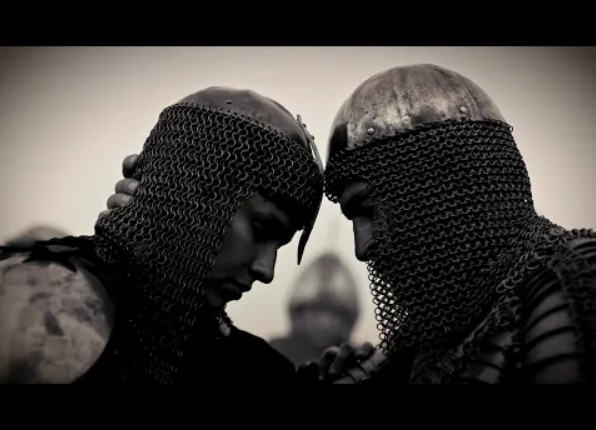

From Australia, Dusk Cult return with Of Tombs and Barren Fields, a composition that embraces the enduring language of classic black metal without surrendering to nostalgia. Blast beats surge beneath sweeping tremolo melodies while the guitars carve mournful paths through a landscape suspended between triumph and decay.
Rather than relying on spectacle, the track builds through atmosphere and disciplined songwriting. High and low harsh vocals move like opposing currents across the relentless percussion, reinforcing themes of mortality, memory, and the silent passage between worlds. Every section serves the composition, allowing melody and aggression to coexist without diminishing either.
Of Tombs and Barren Fields stands as a reminder that black metal remains most compelling when conviction outweighs ornament, preserving the genre's timeless spirit through sincerity rather than imitation.